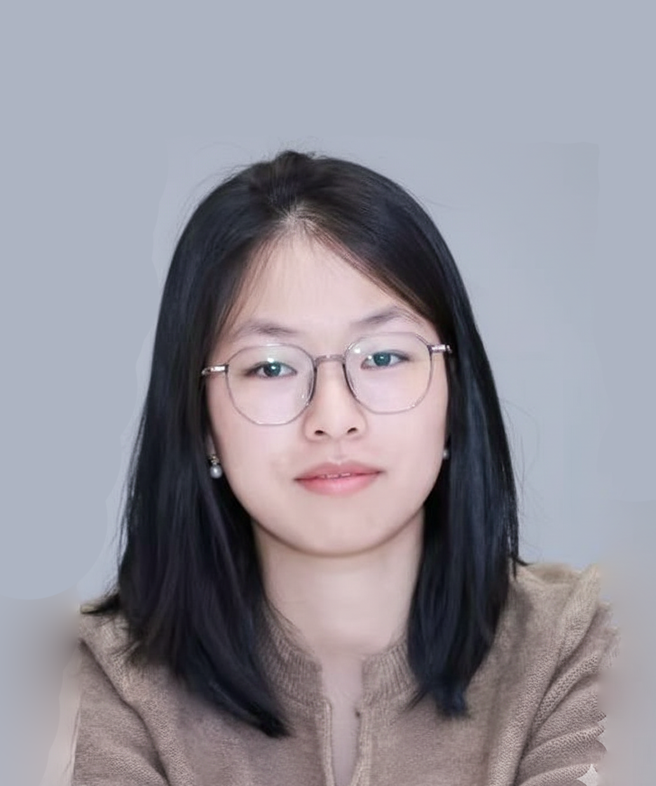
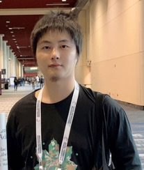

ACM Multimedia 2026 Workshop
JAV-CG The 1st International Workshop on Joint Audio-Video Comprehension and Generation
A dedicated forum for the next wave of audio-video intelligence, spanning robust multimodal understanding, synchronized generation, and unified models that bridge perception and creation.
AUDIO
VIDEO
JOINT AI
About
Joint AV intelligence.
Real-world multimedia is naturally audio-visual, yet many multimodal systems still treat sound as a side channel. JAV-CG focuses on models that listen, see, reason, and generate synchronized multimedia in one coherent framework.
The workshop brings together multimedia, audio and speech, computer vision, and multimodal foundation-model communities to sharpen the research agenda for audio-video comprehension and generation.
Important Dates
Timeline and milestones.
Workshop Paper Submission
30 July 2026Extended JAV-CG workshop contribution deadline.
Author Notification
06 August 2026Acceptance notification for workshop submissions.
Camera-Ready / Final Metadata
20 August 2026Final accepted material and metadata due under the ACM MM 2026 workshop schedule.
Author Registration
20 August 2026Registration deadline for accepted workshop contributions.
ACM Multimedia 2026
10-14 November 2026Conference venue: Rio de Janeiro, Brazil.
Workshop Day
14 November 2026Saturday, 14:00–17:30 in Rio de Janeiro (UTC−3). Room: Oceania VII.
Call for Papers
Topics and submission.
JAV-CG welcomes archival workshop papers intended for the ACM MM 2026 workshop proceedings, as well as non-archival featured-paper submissions for workshop presentation. Technical, position, and perspective papers may be up to 8 pages plus references.
ACM format
Double blind
English only
Archival + non-archival
Audio-Visual Comprehension
- Sound source localization and source separation
- Audio-visual event detection and localization
- Question answering, grounding, and scene reasoning
- Trustworthy and long-form audio-visual understanding
Audio-Video Generation
- Video-to-audio and text-to-audio-video synthesis
- Audio-driven video generation and talking heads
- Foley, spatial audio, multimodal editing, and music
- Controllable synchronized generation across modalities
Unified AV Frameworks
- Any-to-any multimodal generation involving audio and video
- Joint tokenization, alignment, and representation learning
- Unified encoder-decoder or MLLM architectures
- Benchmarks, datasets, metrics, safety, and evaluation
The submission deadline has passed. Workshop contributions are available on OpenReview.
Keynote Speakers
Keynote speakers.
Explore the keynote talks on audio-visual generation and learning. Select a talk abstract or speaker bio to read more.
Title
Towards Holistic and Physically Consistent Audio-Visual Generation
14 November · 14:05–14:45 · Rio de Janeiro (UTC−3)
Talk abstract
Generating rich audio-visual experiences requires integrating visible events, sounds beyond the camera’s view, and the physical relationships connecting what we see and hear. In this talk, I will present our recent work on multimodal generation, progressing from holistic audio generation to evaluating physical consistency in jointly generated audio and video. I will first introduce VinTAGe, which combines video and text conditioning to generate temporally synchronized on-screen and off-screen sounds while addressing modality bias. I will then present OmniSonic, which integrates speech with environmental sounds to enable more complete auditory scene synthesis. Finally, I will examine a fundamental question: do joint audio-video generation models understand physics? Through AV-Phys Bench, I will discuss how we evaluate physical commonsense within and across audio and video, and what current models reveal about the gap between perceptual plausibility and physical consistency. I will conclude with opportunities for building more controllable multimodal generative systems that faithfully capture the dynamics of the physical world.
Speaker bio
Yapeng Tian is an Assistant Professor in the Computer Science Department at UT Dallas, where he leads the Computer Vision and Multimodal Computing Lab. His work has been recognized by the AAAI New Faculty Highlights, Cisco Faculty Research Award, and Amazon Research Award.
Title
Multi-level Alignment in Audio-Visual Generation and Learning
14 November · 16:00–16:40 · Rio de Janeiro (UTC−3)
Talk abstract
How can machines connect what they see with what they hear to understand and generate coherent audio-visual experiences? This talk examines audio-visual alignment at multiple levels, ranging from semantic categories and object identities to the geometry and physical acoustics of a scene. I will present our recent work on three related problems. First, I will discuss audio-visual scene synthesis, where neural scene representations and physics-guided generative modeling enable spatial audio synthesis at novel source and listener positions. Second, I will describe sound separation guided by visual or language cues, including how pretrained audio generative models can isolate sounds without task-specific training. Third, I will introduce language-guided joint audio-visual editing, which modifies visual content and its accompanying sound while preserving source characteristics and maintaining consistency across modalities. Together, these studies show how the demands of audio-visual alignment change across tasks, from identifying a sound source to preserving content during editing and modeling how sound travels through a scene. I will discuss what these differences imply for designing models that produce semantically consistent and physically plausible audio-visual content.
Speaker bio
Chenliang Xu is an Associate Professor of Computer Science at the University of Rochester. His research focuses on multimodal AI, integrating vision, sound, and language to understand and reason about dynamic scenes. He has coauthored 150 publications, and his work has received support from federal agencies including DARPA, ARPA-H, NIH, and NSF, as well as industry partners including Meta, Sony, Adobe, and Cisco. His honors include Rochester’s 2025 Edmund A. Hajim Outstanding Faculty Award, the James P. Wilmot Distinguished Professorship, and multiple paper and demonstration awards. He has served as an area chair for CVPR and ACM Multimedia and will serve as a Program Chair for WACV 2028. He received his Ph.D. from the University of Michigan in 2016.
Workshop Program
Program schedule.
Saturday, 14 November 2026 · 14:00–17:30 · Oceania VII. All times below are local to Rio de Janeiro (UTC−3).
Afternoon Workshop
Confirmed sessions
Oral presentations: 12 minutes + 3 minutes Q&A. Keynotes: 40 minutes including Q&A.
| Time (UTC−3) | Session |
|---|---|
| 14:00–14:05 | Opening |
| 14:05–14:45 | Keynote 1 — Yapeng Tian Towards Holistic and Physically Consistent Audio-Visual Generation |
| 15:30–16:00 | Coffee Break & Poster Session |
| 16:00–16:40 | Keynote 2 — Chenliang Xu Multi-level Alignment in Audio-Visual Generation and Learning |
| 16:55–17:10 | EMODY Flow: Emotion-Aware Audio-Driven Full-Body Motion Generation Oral presentation |
| 17:25–17:30 | Closing |
Poster Session
Meet the poster presenters.
15:30–16:00 · Oceania VII · During the coffee break.
Audio-Visual Joint Fine-Grained Event Recognition Benchmark in Basketball Game
Presenter: Yunhao Zhao
Decoupling Embodied Active Audio-Visual Localization Via Offline Reinforcement Learning
Presenter: Zhuohang Fan (authorized proxy)
Poster preparation
- Recommended format: A0 portrait, 84.1 cm wide × 118.9 cm high.
- Panels: 96 cm wide × 212 cm high, with one poster on each side.
- Poster panels will be inside the workshop room.
- Hooks are available for hanging posters using strings. Tape will be provided for paper or fabric posters.
Presenters should be available beside their posters during the session to explain their work and answer questions.
Organizers
Meet the organizing team.
You Qin
National University of Singapore
HomepageKai Liu
Zhejiang University
Homepage
Shengqiong Wu
University of Oxford
HomepageJuncheng Li
Zhejiang University
HomepageWei Ji
Nanjing University
Homepage
Hao Fei
University of Oxford
HomepageLiang Zheng
Australian National University
HomepageRoger Zimmermann
National University of Singapore
HomepageJiebo Luo
University of Rochester
HomepageTat-Seng Chua
National University of Singapore
Homepage
Contact
Workshop correspondence
- You Qin qinyou@u.nus.edu
- Kai Liu kail@zju.edu.cn
- Shengqiong Wu shengqiongwu@gmail.com
- Hao Fei haofei7419@gmail.com